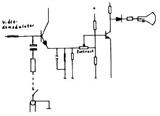
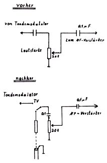
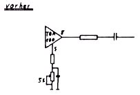

Nascom Journal |
5/80 |
Bei der Darstellung von alpha-numerischen Zeichen auf dem Bildschirm hängt die Lesbarkeit direkt von der Bandbreite ab, mit der das Videosignal vom Videogenerator zum Sichtschirm übertragen wird. Je größer die Bandbreite, desto feiner die Details, die übertragen werden können. UHF-Modulatoren, wie von NAS benutzt, sind kritisch in der Signalübermittlung; sicherlich auch ein Grund für die manchmal etwas dürftige 16x48 Zeilen/Zeichen Darstellung beim Nascom 1 + 2.
Die Bildgenauigkeit verbessert sich, wenn das Videosignal direkt in den Heimfernseher eingespeist wird. Gut geeignet für den Einbau sind portable Empfanger mit mechanischem Kanalwähler. Beim VHF Kanalwähler gibt es zwischen den Kanälen eine Leerstellung. Das Flimmern auf dem Schirm verschwindet. Nun wird das Videosignal über eine Reihenschaltung von R=500Ω und C = 10 µF an die Basis des ersten Videoverstärkers eingespeist. Ist die R·C Kombination schaltbar, tritt keine Verschlechterung des Fernsehempfanges auf.
Für Ungeübte kann es ein Problem sein, den richtigen Transistor im Schaltbild und auf der Platine zu finden. Im Schaltbild findet man die Videostufe, indem man von der Kathode der Bildröhre zurück über die Koppelbauteile, meist ein Widerstand und eine Diode, an den Kollektor des Videostufentransistors kommt. Das Steuersignal für die Videoendstufe liefert der erste Videoverstärker. Mit Bauteilbezeichnung und Lageplan ist es dann nicht mehr schwierig, den Punkt zur Einspeisung zu finden. Die vereinfachte Schaltskizze verdeutlicht den Eingriff.
Um eine vollständige Textzeile auf den Schirm zu bekommen, muß in manchen Fällen die Bildbreite reduziert werden. Gibt es keinen speziellen Bildbreitenregler, kann man durch Verringerung der Betriebsspannung gute Erfolge erzielen. Im Netzteil gibt es einen Regler für den Arbeitspunkt der stab. Stromversorgung. Mit wenig Aufwand läßt sich auch das Tonteil umrüsten. Einmal kann man dabei vom Lautstärkeregler ausgehen, wie die folgende Skizze zeigt.
Manche Geräte sind in der Ton ZF mit dem IC TBA 120 ausgerüstet. Die Lautstärke wird hier mit Hilfe einer Spannung an Punkt 5 des IC’s geregelt. In diesem Fall muß ein zusätzliches Poti eingebaut, oder die Schaltung wie folgt geändert werden.
| Seite 6 von 16 |
|---|